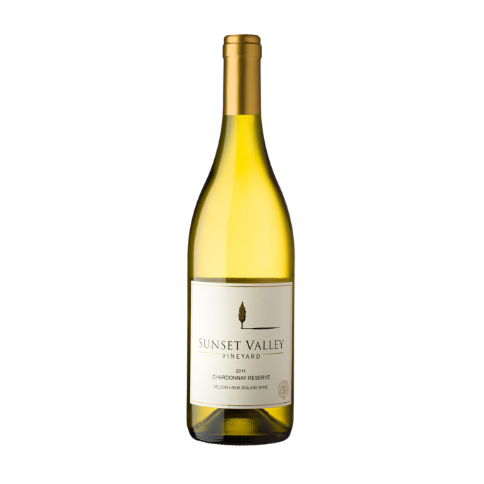

Versatile and popular, chardonnay grows all over the world. It reaches its mineral-laced pinnacle in Burgundy, ripens to tropical richness in California and Australia, and takes very well to new oak. It picks up buttery aromas from malolactic fermentation, and toasty or vanilla scents from aging in new barrels.